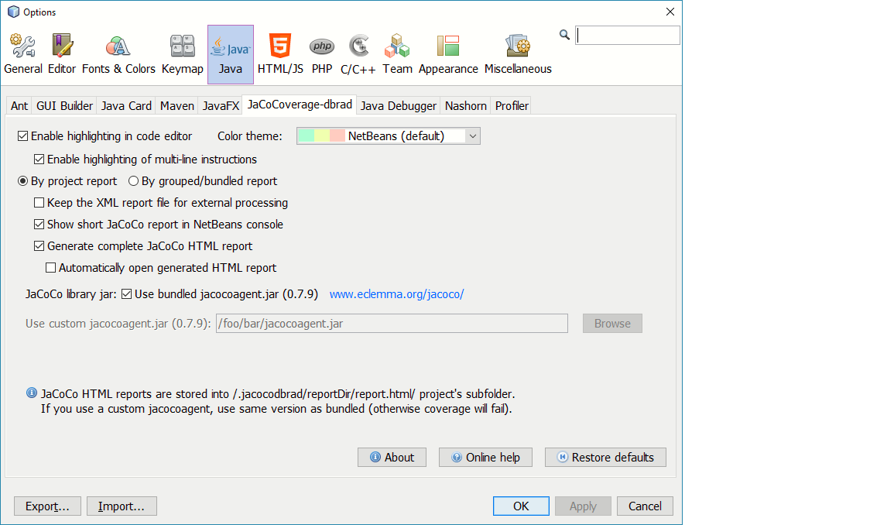

Allows code-coverage on a principle-project source-code folder only and has basic reporting applied for any results. The settings will apply to all Java projects open in the Netbeans IDE, unless the principle-project has the project specific setting set.
JaCoCoverage-dbrad is a tab within the Tools>options>: Java tab
ENSURE TO RESIZE, to see all fields
The settings are duplicated into
project specific settings when a
user sets a principle-project's properties:
'Project-view: {project} > properties > category >
JaCoCoverage-dbrad' to use
project specific option.
The global settings are accessed via the menu-bar: Tools > Options : Java tab
For all cases refer to www.eclemma.org for more detailed explanation as to how the setting apply to JaCoCo-agent coverage.
The default will be adequate for most users.
See Console by-project, or HTML by-project report descriptions.
See Console by-grouped/bundled, or HTML by-grouped/bundled report descriptions.
The default OFF: deletes the XML report after creation of any console/HTML reports.
The purpose of this setting is to allow users to extract-copy the XML-file for their own post-processing of data from raw information.
If this is used the jacocoagent will need to be compatible with the bundled version. That is, 0.9.x may not be compatible with 0.8.x versions. (Check with eclemma.)
The default ON: use the bundled jacocoagent.jar file associated with dbrad-jacocoverage.
An incompatible jacocoagent.jar version will cause unpredictable report formatting, or cause an exception.